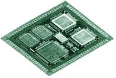
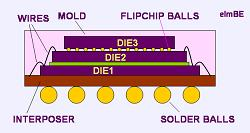

System in a
Package (SIP)
The term
“System in a Package”
or SIP
refers to a semiconductor device that incorporates multiple chips that
make up a complete electronic system into a single package.
Electronic devices like mobile phones conventionally consist of several
individually packaged IC's handling different functions, e.g. , logic
circuits for information processing, memory for storing information, and
I/O circuits for information exchange with the outside world. In a
System-in-a-Package, all of these individual chips are assembled into a
single package, allowing tremendous space savings and significant
down-sizing of electronic gadgets.
SIP must not
be confused with SOC,
or System-on-a-Chip, which is a complete electronic system built on a
single chip. SOC's suffer from long development time and high
development costs, mainly because it is difficult to make an entire
system of differently functioning circuit blocks work on a single
chip. SIP technology, on the other hand, simply takes several readily
available chips and put them together in a single package.
The
predecessor of the SIP is the multichip module (MCM) of the early
1990's, wherein several specialized chips are also assembled in a single
ceramic package as a system solution using traditional assembly
processes. Some people consider the SIP and the MCM as still the
same thing, but most people prefer to give SIP its own distinct identity
because of its mass-production nature and use of cutting edge assembly
technologies. For instance, the chips in an MCM are mounted on the same
plane (the cavity substrate), whereas SIP employs die stacking as its
natural configuration.

Figure
1. Example of an MCM, the predecessor of the SIP
The ability
to take existing chips to come up with a totally new system in a single
package has one clear advantage: it drastically reduces development time
and risk to bring new products to the market more quickly. With SIP
technology, vendors are able to cram multiple flash devices, SRAMs,
DRAMs, microcontrollers, ASICs, DSPs, and passive components into very
thin packages that can fit into sleeker, more stylish, and yet more
complex electronic gadgets.
Aside from
shorter time-to-market, SIP manufacturing reduces its over-all assembly
and test costs, since only one package will be assembled and tested to
come up with the system. Better electrical performance is also
achieved because of the shorter interconnections within the SIP. SIP's
also simplify the process of assembling the final application module by
requiring simpler PCB lay-outs, since the complex interconnections
required by the system have already been taken care of inside the SIP.
The challenge
in SIP manufacturing lies in the assembly process itself. Touted
as the next-level multi-chip module (MCM) assembly technology, it
requires the ability to assemble and interconnect several die not only
horizontally (wherein die are placed side by side), but vertically as
well (wherein several die are placed on top of each other).
Mounting die
on top of each other and interconnecting them is known as
die stacking,
a new technology that is harnessed extensively in state-of-the-art SIP
manufacturing. This extensive use of stacked die configuration is
the reason why SIP is also known as the 3-D package.
One challenge
posed by die stacking is the need to keep the stack thermally and
mechanically stable on the substrate, while allowing good
interconnection among the die, and keeping the package as thin as
possible in doing so. Needless to say, package thickness largely
depends on the number of die that are vertically stacked inside.
For instance, current technology would generally require a 1.4-mm
chip scale package (CSP)
to accommodate a six-die stack whereas a four-die stack can fit within a
1.2-mm CSP.
For more
details about die stacking, please see the article:
Die Stacking.
Flip chip
bonding is also used in SIP interconnection, either on its own or as a
complement to wirebonding. Flip chip configuration may be applied
either to the upper die or the lower ones, depending on the intent of
the design. Flip chipping a bottom die directly onto the substrate
enables that die to operate at a high speed. On the other hand,
flip chipping a top die eliminates the use of long wires for connection
to the substrate.

Figure
2. Example of a 3-die SIP
configuration employing
both
wirebonding and flip chip bonding
Heat dissipation is another challenge in the development of SIP's.
Taking chips off-the-shelf and using them in SIP's isn't always easy
from the thermal point of view, since these chips were designed to
dissipate heat through their own packages. Crowding them all
together inside a SIP can accumulate enough heat to be of major concern
in the field. Thermal management is therefore an important ingredient of
any SIP development process.
SIP
manufacturing not only offers assembly challenges, but test challenges
as well. SIP's combine microelectromechanical systems,
optoelectronic devices, various sensors, linear and digital circuits,
etc., which were built on a different wafer fab process technologies and
therefore have varying excitation requirements. Add to this the
fact that each of these system blocks require special test methods of
its own. A test solution to meet the various test resources and
methods required by a complex SIP can turn out to be expensive.
For these
test issues, some quarters propose a cost-effective solution in the form
of an open-architecture automated test equipment (OA-ATE) that allows
semiconductor manufacturers to specify their own test resource and
instrumentation requirements. 'Specialization' of test capability
nonetheless require some standardized vital elements: 1)
an
industry-standard bus structure; 2) compatibility with industry-standard
data formats; 3) browser technology to access and control
resources; 4) a modular hardware and software structure to enable
reconfigurability; and 5) partitioned test supported by ATE and EDA
tools.
Successful
implementation of SIP manufacturing brings in many advantages that are
important to the semiconductor industry of the future: shorter
time-to-market, lower cost, flexibility, smaller size, etc. To get
there, however, requires a monumental engineering effort to address all
technical obstacles along the way.
See Also:
System-on-a-Chip;
Flip Chip
Assembly; Chip Scale Package;
IC Packaging;
IC
Manufacturing
HOME
Copyright
© 2001-2005
www.EESemi.com.
All Rights Reserved.